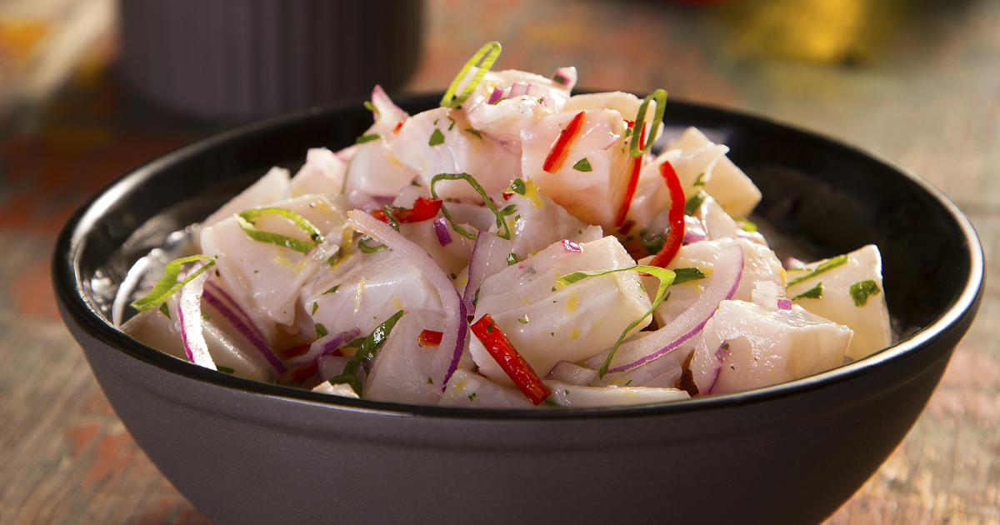

Ceviche
Description
Ceviche is a seafood dish where diced cubes of raw fish,marinated in a lemon or lime juice mixture, react with the citrus juices to cure the fish protein and causes it to become opaque and firm while absorbing flavor.
Ingredients
- Any type of soft fish - Kingfish, Sea bass, Tuna, Salmon...
- Limes
- Extra virgin olive oil
- Avocado and jalapeño
- Coriander/Cilantro
- Red onion
- Garlic
- Tomato
Steps
- Fish - cut the fish into long strips;
- Dice - then cut it into small cubes;
- Combine fish with tomato, onion, jalapeño, pepper and lime juice - Do not add salt (this draws water out of the fish), avocado (these get bashed around too much when tossing) or olive oil (this dilutes the acidity of the lime juice and slows down the cooking too much);
- “Cook” 5 minutes - gently mix, then set aside for 5 minutes to let the lime “cook” the fish;
- Add olive oil, avocado, fresh herbs, salt then gently mix;
- Serve and enjoy